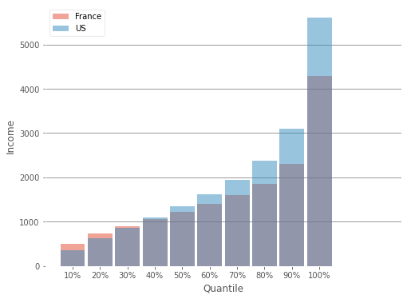
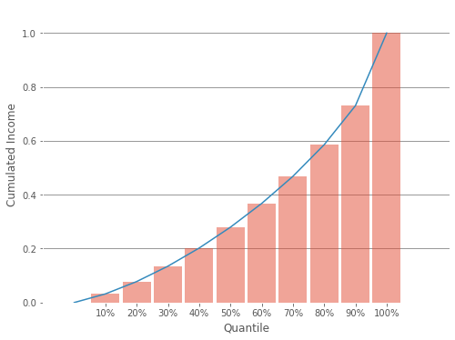
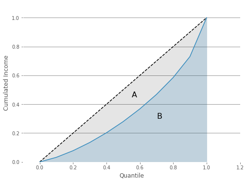
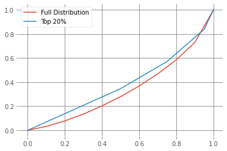
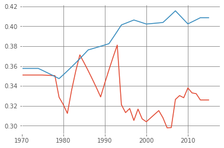

import dbnomics
from matplotlib import pyplot as plt
plt.style.use('ggplot')
plt.rcParams['axes.facecolor']='w'
plt.rcParams.update({"axes.grid" : True, "grid.color": "grey"})
import pandas as pd
import numpy as np
ls gid-excel-2018gid-codebook.txt gid-previewexcel.csv __MACOSX/
import pandas as pdfilename ="gid-excel-2018/gid-previewexcel.csv"df = pd.read_csv(filename, engine="python")import altair as altdf.columnsIndex(['country', 'coun3', 'year', 'atkinson2', 'gini', 'm2mratio',
'palmaratio', 'income1', 'income2', 'income3', 'income4', 'income5',
'income6', 'income7', 'income8', 'income9', 'income10', 'incomeatperc1',
'incomeatperc10', 'incomeatperc20', 'incomeatperc30', 'incomeatperc40',
'incomeatperc50', 'incomeatperc60', 'incomeatperc70', 'incomeatperc80',
'incomeatperc90', 'incomeatperc95', 'incomeatperc99', 'incomeatperc100',
'mean', 'mean2011PPP', 'mld', 'ratio90to10levels', 'share1', 'share2',
'share3', 'share4', 'share5', 'share6', 'share7', 'share8', 'share9',
'share10', 'growthrate', 'incdefn', 'population', 'databasesource',
'sharetop1', 'sharetop5', 'source1', 'sqcoeffvariation',
'surveysource2', 'surveyyears', 'consumptionsurvey', 'theil'],
dtype='object')def get_value(country, year, name):
dd = df[(df['country']==country) & (df['year']==(year))]
return float(dd[name])
def get_gini(country, year):
dd = df[(df['country']==country) & (df['year']==(year))]
return float(dd["gini"])def get_series(country, year):
dd = df[(df['country']==country) & (df['year']==(year))]
avg_inc = float(dd['mean2011PPP'])
shares = [float(dd[f"share{i}"]) for i in range(1,11)]
income = [avg_inc*float(e)*10 for e in shares]
return shares, income
qts = [0.1*i for i in range(1,11)]get_series("France", 2011)[1][510.4986655176001,
727.3399498380002,
905.8840429176001,
1068.2271030276002,
1228.3058492892,
1399.0707211716003,
1598.4519968700001,
1862.1965167956002,
2298.2995205244,
4283.845316406]get_gini("France", 2011)France0.33292484countries = ["France", "China", "United States", "United Kingdom", "Brazil"]
income_per_quantile = {c: get_series(c, 2011)[1] for c in countries}
share_per_quantile = {c: get_series(c, 2011)[0] for c in countries}
# Source Core EconFrance
China
United States
United Kingdom
Brazil
France
China
United States
United Kingdom
Brazilquantiles = [0.1, 0.2, 0.3, 0.4, 0.5, 0.6, 0.7 , 0.8, 0.9, 1.0]inc = np.array(income_per_quantile['France'])
cs = inc.cumsum()
inc_US = np.array(income_per_quantile['United States'])
# cs_US = inc.cumsum()
fig = plt.figure(figsize=(8, 6))
plt.bar([e-0.1 for e in quantiles], inc, width=0.09, align='center', tick_label=[f'{e*100:.0f}%' for e in quantiles], alpha=0.5)
plt.ylim(0)
plt.xlim(-0.1,1.2)
plt.grid( axis='x')
plt.xlabel("Quantile")
plt.ylabel("Income")
plt.savefig("income_inequality_1.png")
display(fig)
fig = plt.figure(figsize=(8, 6))
plt.bar([e-0.1 for e in quantiles], inc, width=0.09, align='center', tick_label=[f'{e*100:.0f}%' for e in quantiles], alpha=0.5, label='France')
plt.bar([e-0.1 for e in quantiles], inc_US, width=0.09, align='center', tick_label=[f'{e*100:.0f}%' for e in quantiles], alpha=0.5, label= 'US')
plt.ylim(0)
plt.xlim(-0.1,1.2)
plt.grid( axis='x')
plt.xlabel("Quantile")
plt.ylabel("Income")
plt.legend(loc='upper left')
plt.savefig("income_inequality_1_comparison.png")
display(fig)
fig = plt.figure(figsize=(8, 6))
plt.bar([e-0. for e in quantiles], cs, width=0.09, align='center', tick_label=[f'{e*100:.0f}%' for e in quantiles], alpha=0.5)
plt.ylim(0)
plt.xlim(-0.1,1.2)
plt.grid( axis='x')
plt.xlabel("Quantile")
plt.ylabel("Cumulated Income")
plt.savefig("income_inequality_2.png")
display(fig)
## inequality measure : top 10% over bottom 10%


sh = cs/cs[-1]
fig3 = plt.figure(figsize=(8, 6))
plt.bar([e for e in quantiles],(cs/cs[-1]).tolist(), width=0.09, align='center', tick_label=[f'{e*100:.0f}%' for e in quantiles], alpha=0.5)
plt.plot([0.0]+quantiles, [0.0]+ (cs/cs[-1]).tolist(), color='C1')
plt.ylim(0, 1.1)
plt.xlim(-0.1,1.2)
plt.grid( axis='x')
plt.xlabel("Quantile")
plt.ylabel("Cumulated Income")
plt.savefig("income_inequality_3.png")
fig3
# we can read the 10% poorest have 3.1%
# while the 10% richest earn 25%
# inequality measure: top10% over top20% = 
sh = cs/cs[-1]
fig3 = plt.figure(figsize=(8, 6))
# plt.bar([e for e in quantiles],(cs/cs[-1]).tolist(), width=0.09, align='center', tick_label=[f'{e*100:.0f}%' for e in quantiles], alpha=0.5)
plt.plot([0.0]+quantiles, [0.0]+quantiles, color='black', linestyle='--')
plt.fill_between([0.0]+quantiles, [e*0 for e in ([0.0]+quantiles)], [0.0]+quantiles, color='black', alpha=0.1)
plt.plot([0.0]+quantiles, [0.0]+ (cs/cs[-1]).tolist(), color='C1')
plt.fill_between([0.0]+quantiles, [e*0 for e in ([0.0]+quantiles)], [0.0]+ (cs/cs[-1]).tolist(), color='C1', alpha=0.2)
plt.ylim(0, 1.1)
plt.xlim(-0.1,1.2)
plt.grid( axis='x')
plt.xlabel("Quantile")
plt.ylabel("Cumulated Income")
plt.savefig("gini.png")
plt.text(0.55, 0.45, "A", fontdict={"size": 16})
plt.text(0.7, 0.3, "B", fontdict={"size": 16})
B = sum( [0.0]+ (cs/cs[-1]).tolist() )/1
print('Gini: ', (1-2*B ))
print("it should be 0.33")
fig3
Gini: -6.757369935147398
it should be 0.33
income_per_quantile{'France': [510.4986655176001,
727.3399498380002,
905.8840429176001,
1068.2271030276002,
1228.3058492892,
1399.0707211716003,
1598.4519968700001,
1862.1965167956002,
2298.2995205244,
4283.845316406],
'China': [45.92616406559999,
95.07738346080001,
147.76284945240002,
206.01037747679996,
272.8685765208,
353.4260517216,
457.32411165480005,
606.4540846728,
869.3027064227999,
1917.5676945516],
'United States': [350.7690341904,
619.9808561568001,
864.7120830168001,
1102.2915414408,
1347.5906722512002,
1618.1163159816003,
1941.5423451144002,
2375.6458925328006,
3093.4462178064005,
5603.425230684001],
'United Kingdom': [406.6649287554,
620.1000463248,
800.425416867,
966.9183441114001,
1132.6065687429,
1310.1921632253002,
1517.6133321312,
1790.3849683071003,
2232.0367535079,
3677.9274780270002],
'Brazil': [57.832885405439995,
116.12704198464,
164.25351435455997,
213.53656694976,
268.78778410175994,
335.4778012032,
422.87455794816,
551.49833850624,
785.9866597113601,
2050.47270082944]}plt.clf()
fig3 = plt.figure(figsize=(8, 6))
for c in countries:
sh = np.array(share_per_quantile[c]).cumsum()
gini = get_gini(c, 2011)
plt.plot([0.0]+quantiles, [0.0]+ sh.tolist(), label=f"{c} | Gini: {gini:.2f}")
# plt.bar([e for e in quantiles],(cs/cs[-1]).tolist(), width=0.09, align='center', tick_label=[f'{e*100:.0f}%' for e in quantiles], alpha=0.5)
plt.plot([0, 1], [0, 1], color='black', linestyle='--')
plt.ylim(0, 1.1)
plt.xlim(-0.,1.)
plt.grid( axis='x')
plt.xlabel("Quantile")
plt.ylabel("Cumulated Income")
plt.legend(loc='upper left')
plt.savefig("income_inequality_comparison.png", transparent=True, bbox_inches='tight')<Figure size 432x288 with 0 Axes>
sh9 = get_value("France", 2010, "share9")
sh10 = get_value("France", 2010, 'share10')
t5 = get_value("France", 2010, 'sharetop5')
t1 = get_value("France", 2010, 'sharetop1')
# get_value("France", 2010, 'sharetop10')France
France
France
Francetotal = sh9 + sh10x = np.array([0.0, 10, 15, 19, 20])/20
y = np.array([0.0, sh9/total, (sh10-t5)/total, (t5-t1)/total, t1/total])
c = y.cumsum()sh = np.array(share_per_quantile["France"]).cumsum()
plt.plot([0.0]+quantiles, [0.0]+ sh.tolist(), label=f"Full Distribution")
plt.plot(x,c, label="Top 20%")
plt.legend(loc='upper left')
def get_all_gini(country):
dates = []
indices = []
for year in range(1900, 2020):
try:
gin = get_gini(country, year)
dates.append(year)
indices.append(gin)
except:
pass
return dates, indicesdates0, indices0 = get_all_gini("France")
dates1, indices1 = get_all_gini("United States")plt.plot(dates0, indices0)
plt.plot(dates1, indices1)
plt.xlim(1970)
INSEE: Gini index
gini_france = [[1970, 0.337],
[1975, 0.323],
[1979, 0.303],
[1984, 0.297],
[1990, 0.283],
[1996, 0.282],
[1997, 0.281],
[1998, 0.279],
[1999, 0.286],
[2000, 0.289],
[2001, 0.288],
[2002, 0.284],
[2003, 0.283],
[2004, 0.283],
[2005, 0.289],
[2006, 0.293],
[2007, 0.292],
[2008, 0.292],
[2009, 0.293],
[2010, 0.302],
[2011, 0.305],
[2012, 0.302],
[2013, 0.288],
[2014, 0.289],
[2015, 0.292],
[2016, 0.288],
[2017, 0.289]]dates, gini = [*zip(*gini_france)]ginis_us = [[1974, 35.3],
[1979, 34.6],
[1986, 37.5],
[1991, 38.2],
[1994, 40.2],
[1997, 40.7],
[2000, 40.3],
[2004, 40.5],
[2007, 41.0],
[2010, 40.3],
[2013, 41.0],
[2016, 41.4]]
dates_us, gini_us = [*zip(*ginis_us)]
gini_us = np.array(gini_us)/100plt.figure(figsize=(12, 6))
plt.plot(dates, gini, label='France')
plt.plot(dates_us, gini_us, label='United states')
plt.legend(loc='upper left')
plt.savefig("gini_evolution.png", transparent=True, bbox_inches='tight')